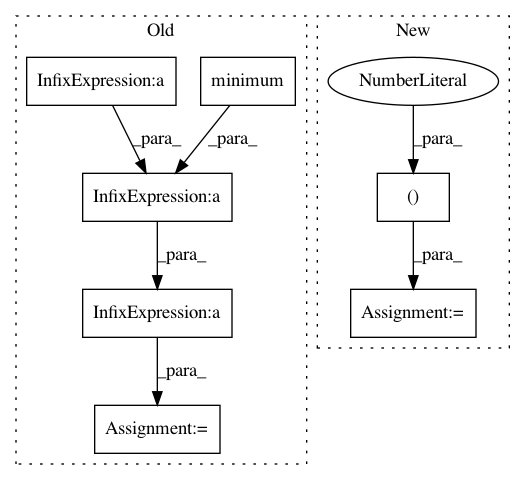

f67b777d2153821ee08e103232d95d8bc8b29332,tests/modules/test_resize.py,TestResize,test_03_02_bicubic,#TestResize#,234
Before Change
// Bicubic here should be betweeen nearest neighbor and bilinear
i, j = numpy.mgrid[0:19, 0:19]
low_bound = (i / 2) ** 2
upper_bound = (i.astype(float) / 2) ** 2
odd_mask = i % 2 == 1
upper_bound[odd_mask] = (upper_bound[numpy.maximum(i - 1, 0), j] +
upper_bound[numpy.minimum(i + 1, 18), j])[odd_mask] / 2
workspace, module = self.make_workspace(image, cellprofiler.modules.resize.R_BY_FACTOR,
cellprofiler.modules.resize.I_BICUBIC)
module.resizing_factor.value = 19.0 / 10.0
module.run(workspace)
After Change
def test_03_02_bicubic(self):
i, j = numpy.mgrid[0:10, 0:10]
image = skimage.exposure.rescale_intensity(1.0 * i)
expected = skimage.transform.resize(
image,
(30, 30),
order=2,
mode="symmetric"
)
workspace, module = self.make_workspace(
image,
cellprofiler.modules.resize.R_BY_FACTOR,
cellprofiler.modules.resize.I_BICUBIC
In pattern: SUPERPATTERN
Frequency: 3
Non-data size: 7
Instances
Project Name: CellProfiler/CellProfiler
Commit Name: f67b777d2153821ee08e103232d95d8bc8b29332
Time: 2017-02-24
Author: mcquin@broadinstitute.org
File Name: tests/modules/test_resize.py
Class Name: TestResize
Method Name: test_03_02_bicubic
Project Name: adalca/neuron
Commit Name: 4d3ea76dcab0d44a9a58a2482cada4b7d5386726
Time: 2019-03-07
Author: adalca@mit.edu
File Name: neuron/layers.py
Class Name: MeanStream
Method Name: call
Project Name: chainer/chainercv
Commit Name: 95019f66fa70766e78a949bddd336305be4918b8
Time: 2017-05-22
Author: yuyuniitani@gmail.com
File Name: chainercv/evaluations/eval_detection_voc.py
Class Name:
Method Name: _pred_and_rec_cls